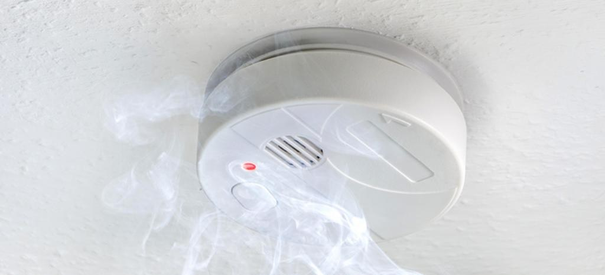
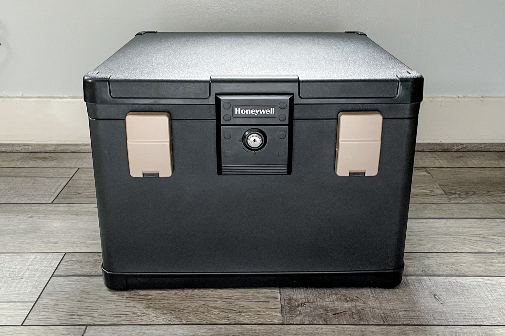

| What you need to have in your home in case of a fire: | |
|---|---|
 |
1.Fire extinguisher |
 |
2.Fire exit |
|  | 3.Smoke detectors |
|  | 4.Fireproof storage materials(to keep your important documents safe like your birth certificate) |
Fire is one of the most dangerous but also one of the most important discoveries of all time since you can use it for light and cooking. Fires can happen inside your home when your not cautious. It can harm you and destroy anything that comes along its path. To be safe when there is a fire in your house please follow the list and check if you have the following.